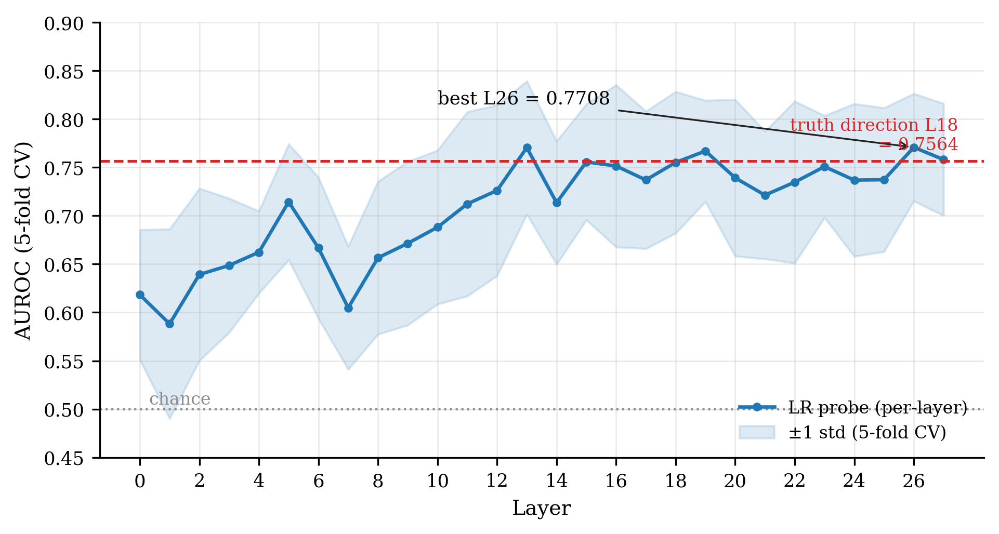
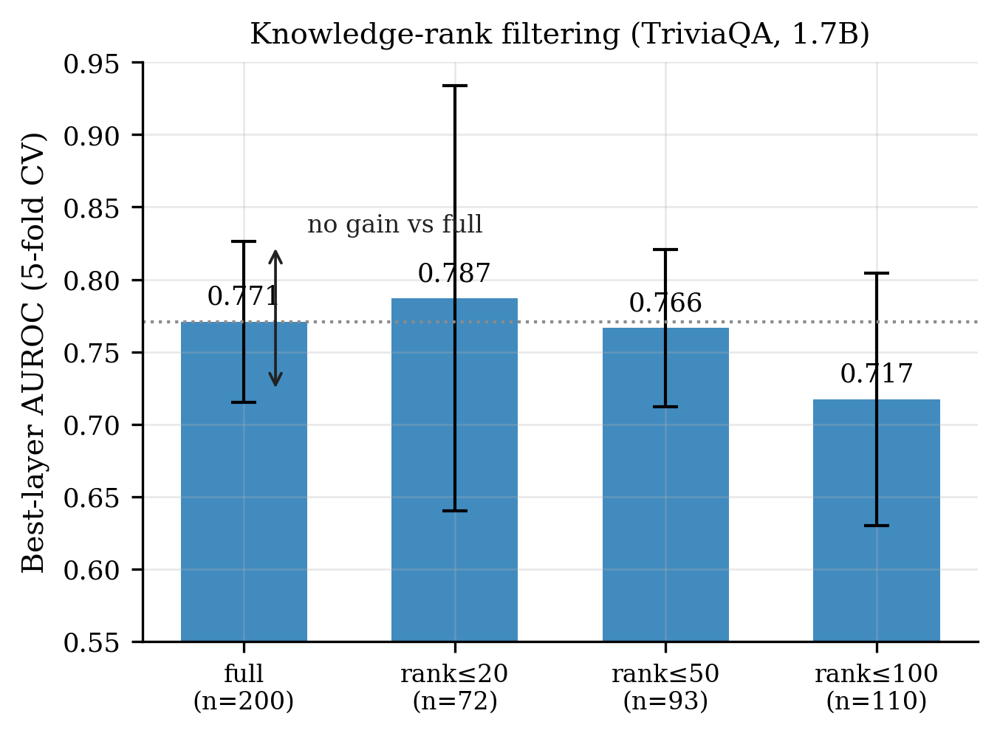
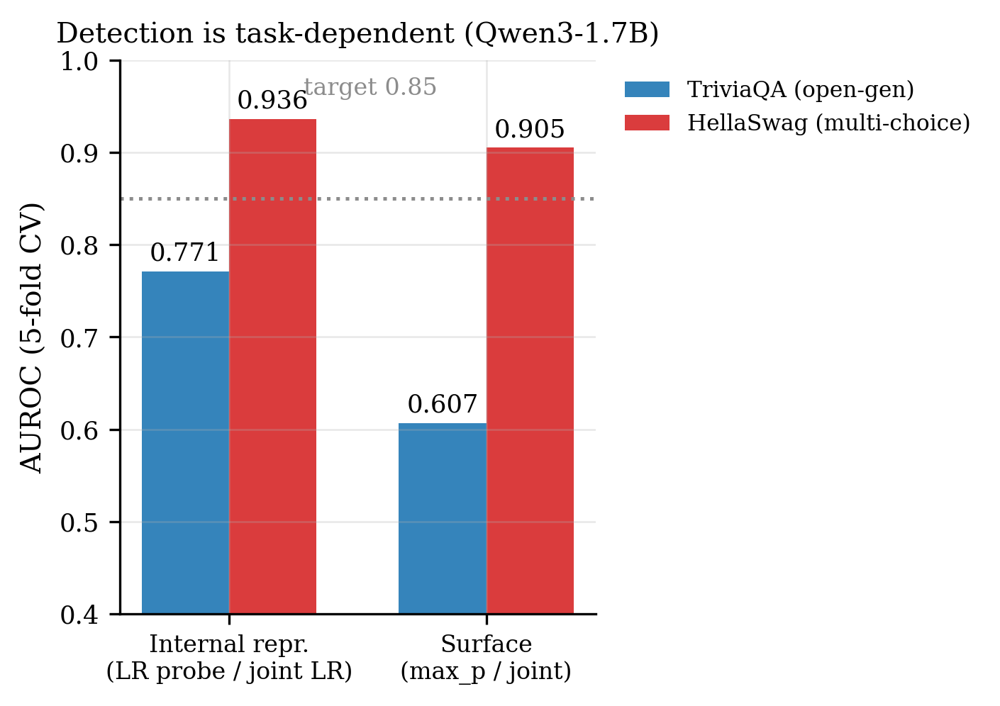
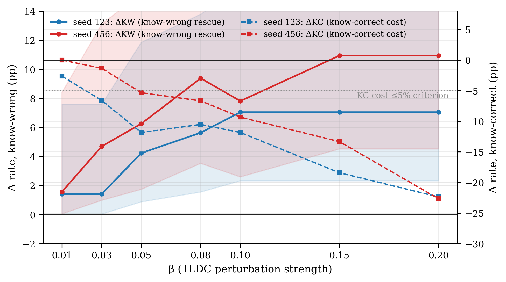
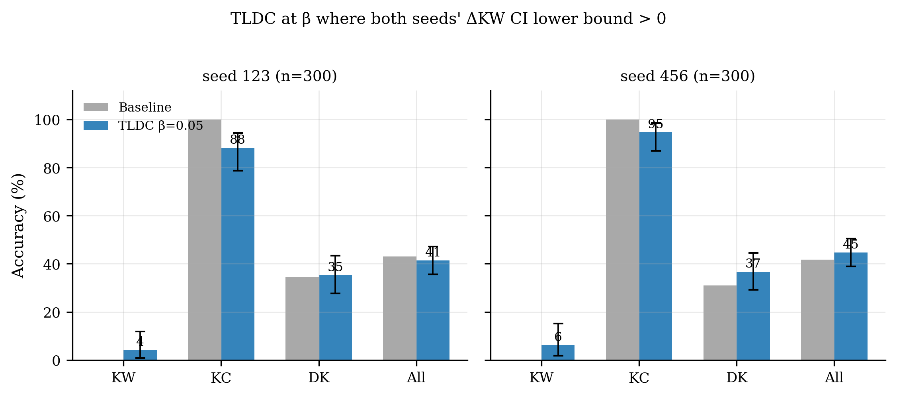
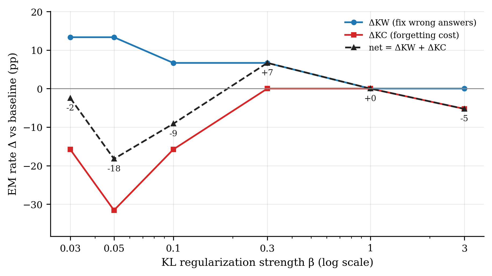
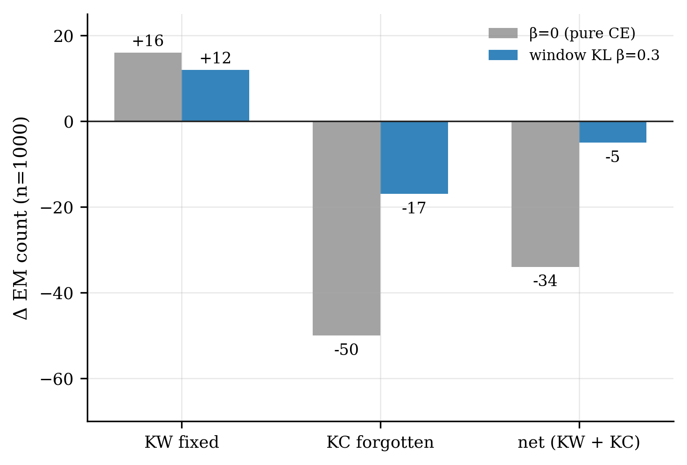

图 5.1 逐层线性探测的检测 AUROC（TriviaQA，5 折交叉验证）

图 5.2 知识秩筛选分组的检测 AUROC（rank≤20/50/100 与全样本）

图 5.3 检测能力跨数据集对照（HellaSwag 与 TriviaQA）

图 5.4 TLDC 扰动强度 β 的剂量-响应曲线（双 seed）

图 5.5 TLDC 与基线在 β=0.05 的分组合计准确率（双 seed）

图 5.6 KL 反遗忘正则化强度 β 扫描

图 5.7 窗口 KL 正则化前后对比（n=1000）